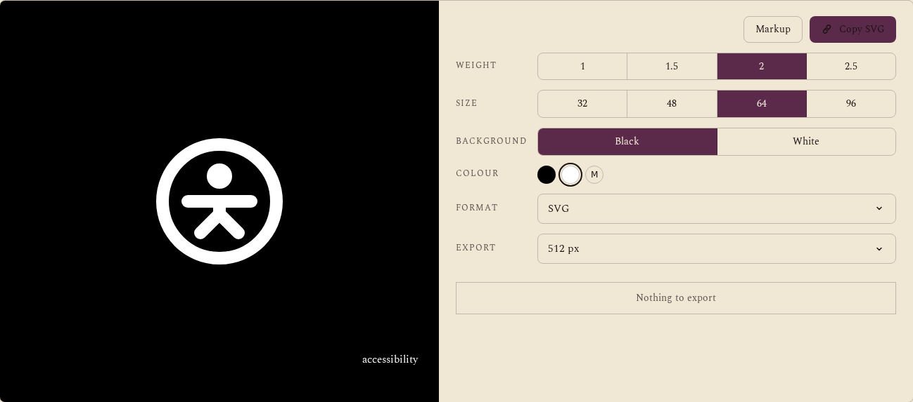

A free design shelf · no account
4,373 icons.
No account.
A real icon browser, three working type families and a photo compressor that runs on your phone. Take what you need; nothing is uploaded.
Free to use · 24 styles · SVG and PNG · works offline in the app

Three shelves.
One standard.
Every resource is here because it does a job: a symbol to place, a typeface to set, a tool to finish the file. No account gates and no samples that turn into a paywall.
4,373 symbols in 24 styles, drawn on one grid. Search by name, filter by style, copy SVG or PNG.
Three families with the weights and italics already cut: a display serif, a text serif and a working grotesk.
Compress a photo without uploading it. Preview the file, keep the original and save the copy you meant to make.
The same shelf, in your pocket
The app works with the Wi-Fi off.
Icons, fonts and compression live on the phone. No account, no queue, no upload. Compressed copies go to Pictures; originals stay exactly where they were.